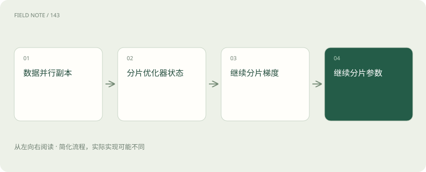
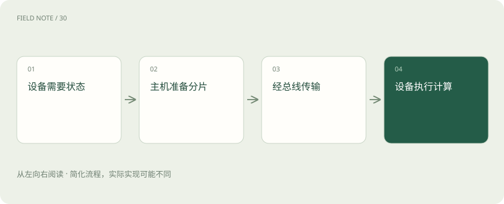

先说这篇在讲什么
一台设备故障模型在短工单上能训练，换成长记录就提示显卡空间不足。买更多显卡之前，要先知道空间被谁占用：模型参数、训练修改记录和中间计算结果都在争用。DeepSpeed 帮助安排这些内容放在哪里、设备怎样交换数据，本篇沿着这次训练解释它的取舍。
先看一个具体例子
故障记录变长后先分析激活占用；若激活主导先试重算，若参数状态主导再比较 ZeRO-3 和卸载。
遇到陌生概念，可以先读
打个比方，帮助理解
这是帮助理解的比方，实际过程以正文说明为准。
一图看懂
显卡不只装着模型文件
设备团队想让模型学习完整故障记录。训练时，参数保存当前模型，梯度记录这次应该怎样修改参数，优化器状态保存更新所需的历史信息。激活则是计算途中留下、后面还要使用的结果。通信缓冲和临时计算也要空间，所以模型下载文件大小不是训练显存需求。
DeepSpeed 是安排训练计算、状态存放和设备协作的运行时。LoRA 则通过只训练少量附加参数减少需要更新的内容。二者解决不同问题，可以组合；选择组合后还要重新计算各类状态的实际开销。
先理解多张卡为什么仍会浪费空间
普通数据并行让几张卡各处理不同数据，但每个训练进程通常保留完整模型训练状态。进程可以理解为一名执行训练的工作人员。大家得到各自的修改建议后，还要同步结果，才能继续沿着共同模型训练。
因此增加卡数不意味着每张卡自动少存一半资料。ZeRO 的思路是把原来重复保存的一些状态拆开，让数据并行组里的成员分别负责。分组可能只是集群的一部分，计算节省比例时不能直接使用全部显卡数。
第一阶段只先拆更新历史
ZeRO-1 把优化器状态分片，即每个成员只负责其中一部分；模型参数和梯度仍有副本。优化器好比决定参数怎样调整的更新规则，它保存的历史有时很占空间，因此先拆它就能获得明显帮助。
但这不是把所有显存都除以卡数。激活、参数等内容仍然存在，具体节省取决于优化器种类、数值精度和参与分片的组规模。设备之间仍需协调更新结果，分片不等于免除了通信。
图解：ZeRO逐级分片

第二阶段再拆修改建议
ZeRO-2 在优化器状态之外继续分片梯度。梯度是反向计算得到的修改方向，并不是模型参数本身。减少每个进程长期持有的梯度可以进一步省空间，但需要设备通过集合通信交换和归并相关数据。
系统可尝试边计算边传输，实际能遮住多少等待取决于网络、分桶大小和计算工作量。如果第二阶段已能处理目标记录长度，就不必仅为更高数字升级。比较稳定运行时的每步耗时，同时把预热、加载和保存时间单独看清。
第三阶段连参数也拆开保管
ZeRO-3 进一步分片模型参数。设备计算某一模块时，需要先取得所需参数，再开展运算，因此单卡不用始终保存全部参数，却仍会出现收集参数的瞬时空间和预取开销。不能用平均分片大小保证峰值永远不会超限。
这能让原来装不下的模型变得可训练，但网络较慢时可能大量等资料。保存时生成的分片检查点，也就是恢复训练用的状态文件，需要按相应方式汇集或恢复；随手拿一个设备的分片不能直接当成完整模型部署。
卸载是把资料搬到更远的地方
Offload 中文常叫卸载，把部分状态放到主机 CPU 内存，特定方案还可使用 NVMe 存储。显存容量压力降低了，但计算需要数据时，要通过总线在主机和显卡之间搬运。CPU 内存带宽、总线速度、存储速度和容量因此都会影响训练。
必须说清卸载的是参数还是优化器状态，以及所选阶段是否支持。多个进程共用主机内存会争用容量和带宽。偶尔跑一次实验，慢一点但能完成可能值得；长期训练则要比较完成任务总时间，不能只看少买了多少显卡。
资料经过哪条路会改变速度
一台机器内部的高速互联与跨机器网络速度不同。同样的 ZeRO 设置，把通信组分布到不同机器上可能表现完全不同。梯度归并和参数收集各有用途，等待变长时要找出是哪条传输路线忙，而不是简单继续加卡。
较大的通信桶可能提高带宽利用，却占更多临时空间；提前取参数可能减少等待，却抬高峰值。计算通信重叠只是安排工作的机会，不会让搬运消失。测试还应覆盖持续运行，短时间成功不能保证长期没有超时与尾部等待。
图解：卸载数据通路

长记录还可能卡在中间结果
长输入会产生更多激活，有时它才是显存的大头。激活重算选择不长期保留某些中间结果，反向计算需要时再做一次，用额外计算换空间。ZeRO 主要处理模型训练状态，两者可以结合，但不能把节省比例直接相乘。
微批量是一次前向和反向计算处理的样本量，梯度累积则多算几次再更新参数。减小微批量可降低部分激活峰值，再用累积维持有效批量，但设备利用率也会变化。长短工单差异很大时，还应按词元看工作量，而不只数样本。
其他工具放在正确层次比较
PyTorch FSDP 是全分片数据并行方案，与 ZeRO-3 的状态分片目标相近，但接口、状态管理和检查点恢复不同，配置不能直接互换。TorchTitan 则组织 PyTorch 分布式训练能力，提供多维并行的参考与工程实现；它不是单独优化器，也不是与 FSDP 同层的按钮。
设备团队应先测溢出来自激活还是模型状态，再尝试重算、分片或卸载。保持有效批量和数据量一致，记录峰值显存、有效词元吞吐及总耗时，并真正做一次中断恢复和导出推理。能恢复并完成业务目标，才说明整套安排可用。
放在一起对比
| 方案 | 主要职责 | 选择边界 |
|---|---|---|
| ZeRO-1 | 优化器状态分片 | 参数与梯度仍有副本 |
| ZeRO-2 | 再分片梯度 | 需评估梯度通信 |
| ZeRO-3 | 再分片参数 | 收集与临时峰值仍存在 |
| Offload | 借助主机或存储容量 | 可能受传输限制 |
| PyTorch FSDP | 全分片数据并行 | 接口与恢复不同 |
| TorchTitan | 组合分布式训练工程 | 不是单一分片算法 |
读完先记住这一句
别踩这个误区
想一想
为什么更多显卡反而训练更慢？
新增设备可能增加跨机通信，参数与梯度传输的等待超过了计算节省，需要检查拓扑和分组。
关联阅读
资料与边界
本文为原创知识讲解。类比和图示经过简化；示例数字不代表实测或报价。整理日期：2026-11-05。文末列出对应技术的原始资料，具体功能与版本支持请以原文为准。
按完整目录逐篇阅读